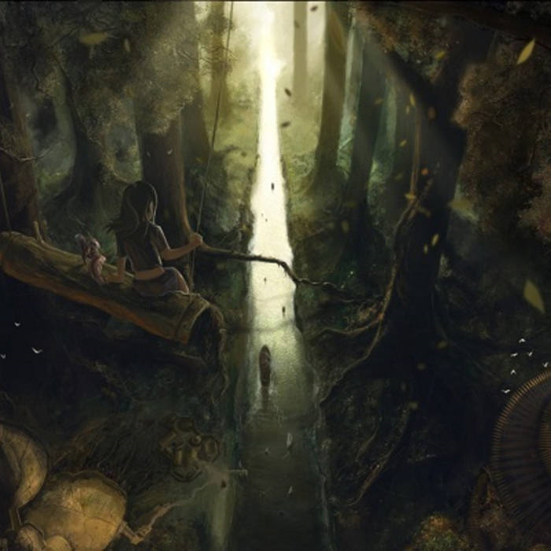

Laréze
Laréze, elfská země, nekonečný les plný elfů, vznešených a krásných. Laréze, země plná divochů požírající lidské maso svých předků proto, aby z něj získal vzpomínky. Laréze, místo kde se příroda spojuje s magií a kde víly dávají dobrou noc.
Laréze má spoustu popisů ať už mezi obyvateli Garagoru, Varky, či kýmkoliv kdo se o ní zmíní. Je rozhodně známá, skoro až proslulá, ale někdy v dobrém,
někdy zlém, je od ostatního světa oddělena Starohorami a Chvozdem, z nichž oba jsou obtížné překročit. Proto o ní koluje tolik mýtů, protože její izolace
trvá již spoustu let.
Hlavním městem Laréze je Hayax.
Dobrodružství, která se zde odehrála:
Laréze na mapě
Laréze